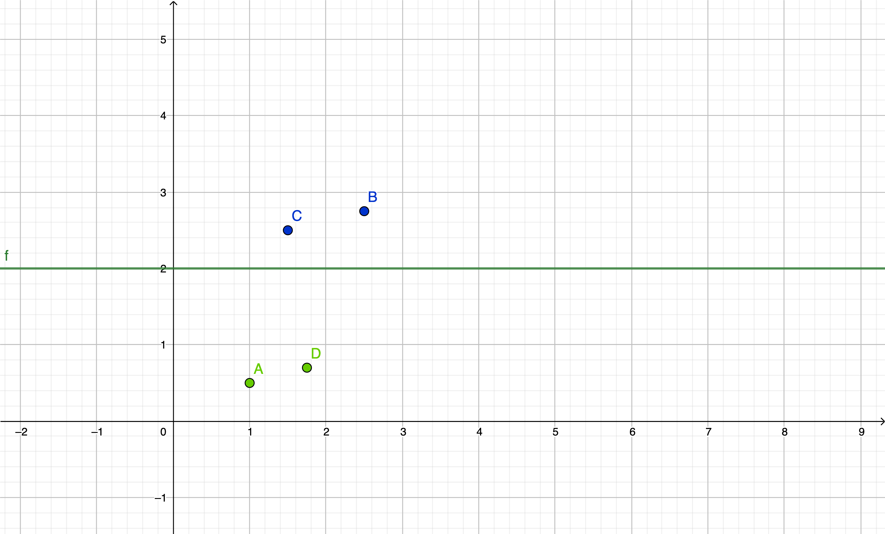
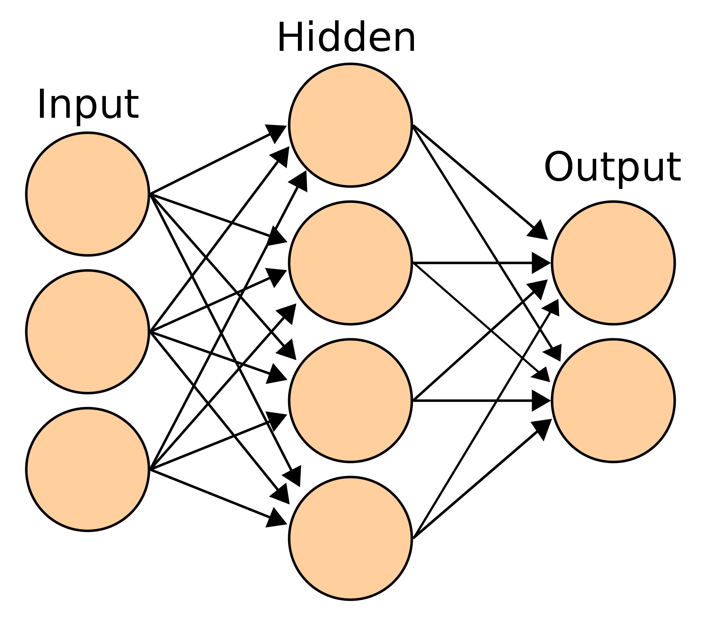

Now that we had an introduction, it is time to introduce a basic computational model called the perceptron, which is a model in a collection of models called artificial neurons, in general. The perceptron was invented by Frank Rosenblatt in 1958. Rosenblatt defined the perceptron as a unit of computation that had a threshold \(\Theta\), and received inputs \(i_1, i_2, ..., i_n\), which are multiplied by \(w_1, w_2, ..., w_n\) respectively. He then proposed that all of the products be summed together and another constant called the bias was added, for which the perceptron would output 1 if the sum was greater than or equal to the threshold, and 0 if it was smaller.
In mathematical terms, \(t = \displaystyle\sum^{n}_{k\ =\ 1}{w_{k} i_{k}}\),
output \(\left\{\begin{array}{l} 1,\ b + t > \Theta \\ 0,\ b + t ≤ \Theta \end{array} \right.\). In other words, a perceptron is a unit consisting of something called a weight, which was multiplied by the input (sometimes called the activation), and if the sum of the products of the two was bigger than a number called the threshold, the perceptron would output a 1, or 0 if not.
Another way to think about this is, the threshold is a value for which classifies all events \(a\) as similar if the summation of the product of their inputs and a set of weights with another constant called the bias is higher than the threshold. This also could be thought of as an event with a point \((x,\ y)\). The threshold would therefore be a line \(y\ =\ \Theta\), which separated two different sets of points. Here is a graphical representation:
Figure 2-1: A graphical representation of a threshold separating two points
Like the diagram, the perceptron can similarly “separate” two different inputs and classify or predict the output for that input. So, now that we have these two basic properties, we can start to understand why machine learning and artificial intelligence are important in the field of data science. For example, say you want to classify whether a 3 by 3 grid of inputs is a 0 or 1. This requires a method to separate different sets of inputs and identify common features. In the perceptron model, since the weights, biases, and threshold are the only unknown variables, these are the ones we need to figure out to have the desired classification result. Machine learning, therefore, can be defined as the method that achieves this task of finding ideal values for the weights, bias, and threshold. Do note that other models may not have a threshold, but require an activation function which we will discuss in later chapters.
This was a ground-breaking invention that inspired others after Rosenblatt and caused the first AI winter. An AI winter is a period when no or little progress was made in the field of artificial intelligence. After the invention of the perceptron, professor Marvin Minsky in his book Perceptrons proved that a single layer of these perceptrons wasn’t able to predict anything. This led to a misunderstanding which resulted in a decrease in research on the area. Minsky actually also wrote in the same book that a network of several layers would have the ability to approximate any function, which resulted in the Universal Approximation Theorem, stating that a neural network with multiple layers could approximate any continuous (and predictable) function to any degree of accuracy.
Given this information, neural networks are just a collection or array of these perceptrons(although they may have a different type of neuron instead), connected through multiple layers. Usually, the first layer is called the input layer, the middle layers are called the hidden layers and the last layer is called the output layer. Below is a diagram of a neural network.
Figure 2-2: Neural Network Architecture
This network can be called a neural network with structure 3-4-2(appears in the layer order from left to right). The lines on the diagram show the different connections between neurons in the network, which are represented by orange circles. The connections can be referred to as weights, which (if you remember) are multiplied by the input or activation. It is important to note that there is only one bias in the weighted sum to each neuron in the next layer. Usually, there are no connections towards a bias, but biases are connected to the next layer’s neurons. Networks can be called “single-layered networks” when there are only two layers in it(input and output). We will talk more about neural networks in Chapter 4.
A perceptron in mathematical terms is: \(t = \displaystyle\sum^{n}_{k\ =\ 1}{w_{k} i_{k}}\),
where the output of the perceptron is \(\left\{\begin{array}{l} 1,\ b + t > \Theta \\ 0,\ b + t ≤ \Theta \end{array} \right.\), where \(w_k\) and \(i_k\) are the weights and inputs at index \(k\) respectively. \(n\) is the total number of weights connected to the perceptron and \(\Theta\) is the threshold value. The output is also alternatively expressed as: \(\left\{\begin{array}{l} 1,\ b + t ≥ \Theta \\ 0,\ b + t < \Theta \end{array} \right.\), which rarely makes a difference to the overall output of the perceptron and the accuracy of the neural network.